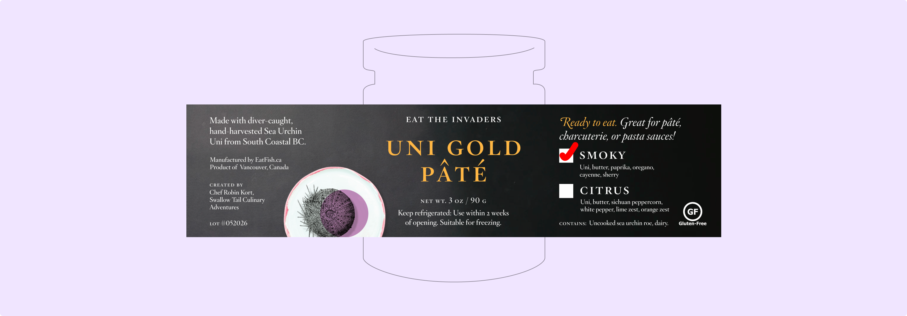

Currently studying & working & looking for new projects to do what I love.
[ Learn More ]
SPARKJAM 2026
UI / UX DESIGN
RESEARCH
MOTION
MICROSITE
ART DIRECTION

TEALEAVES x EAT THE INVADERS
GRAPHIC DESIGN